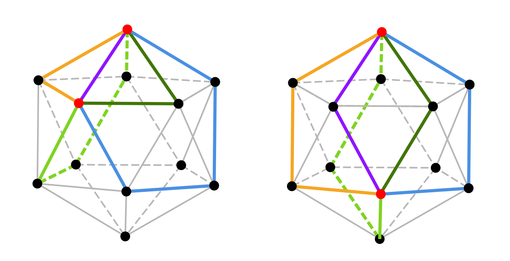
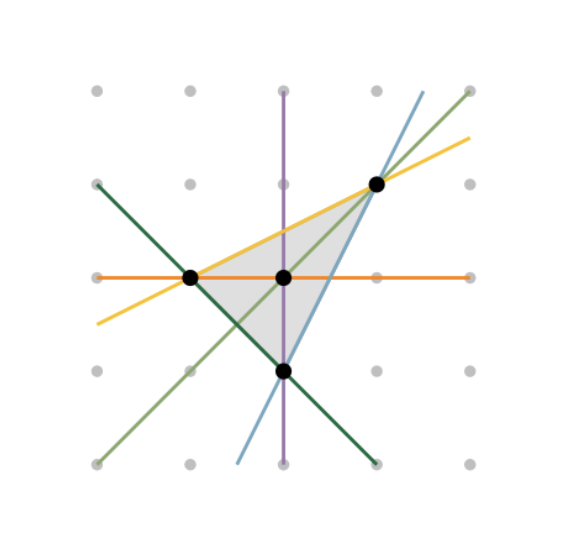

-

1. A Model for Birdwatching and other Chronological Sampling Activities. Jesús A. De Loera, Edgar Jaramillo-Rodriguez, Deborah Oliveros, Antonio J. Torres. 2022. The American Mathematical Monthly vol 30 issue 6.
-

2. From word-representable graphs to altered Tverberg-type theorems. Deborah Oliveros, Antonio J. Torres. 2025. Discrete & Computational Geometry.
-

3. Tverberg Partition Graphs. Deborah Oliveros, Érika Roldán, Pablo Soberón, Antonio J. Torres. 2024. SIAM Journal on Discrete Mathematics, 39(2), 863–880.
-

4. On the Number of Vertices in a Hyperplane Section of a Polytope. Jesús A. De Loera, Gyivan López-Campos, Antonio J. Torres 2024. arxiv preprint.
-

5. On Lattice Diameter Segments and a Discrete Borsuk Partition Problem. Anouk E. Brose, Jesús A. De Loera, Gyivan López-Campos, Antonio J. Torres 2024. arxiv preprint.